Топологические отношения
Геоинформатика I. Базы пространственных данных
История развития
Модели топологических отношений разработаны в первой половине 90-х гг. ХХ в.:
- Модель 4 пересечений 4IM (Max J. Egenhofer и Franzosa 1991).
- Модель 9 пересечений 9IM (Max J. Egenhofer 1991; Max J. Egenhofer и Herring 1991).
- Модель 4 пересечений с размерностью DE-4IM (Clementini, Di Felice, и van Oosterom 1993).
- Аналитическая модель CBM (Clementini, Di Felice, и van Oosterom 1993).
- Модель 9 пересечений с размерностью DE-9IM (Clementini и Di Felice 1995).
Наибольший вклад внесли два ученых:
Max Egenhofer (University of Maine, USA)
Eliseo Clementini (University of L’Aquila, Italy)
Обозначения
| \(P\) | точка |
| \(L\) | линия |
| \(A\) | полигон |
| \(\lambda\) | \(P|L|A\) |
| \(\partial\) | граница |
| \(^\circ\) | внутренность |
| \(^-\) | внешняя область |
| \(\cap\) | пересечение |
| \(\varnothing\) | пустое множество |
| \(\neg \varnothing\) | непустое множество |
| \(-\) | нуль (отсутствие значения) |
Вычисление размерности
Функция \(\dim(S)\) применительно к произвольному множеству точек \(S\) дает следующие значения:
| \(-\) | если \(S = \varnothing\) |
| \(0\) | если \(S\) содержит хотя бы одну точку и не содержит линий и полигонов |
| \(1\) | если \(S\) содержит хотя бы одну линию и не содержит полигонов |
| \(2\) | если \(S\) содержит хотя бы один полигон |
Определения
Граница
\(\partial P\): граница точки всегда пуста (\(\partial P = \varnothing\))
\(\partial L\): граница линии состоит из ее конечных точек или пуста если линия замкнута
\(\partial A\): граница полигона состоит из кривых, представляющих его предельные точки
Внутренность произвольного объекта \(\lambda\) определяется как:
\[ \lambda^\circ = \lambda - \partial \lambda \]
Внешняя область произвольного объекта \(\lambda\) определяется как:
\[ \lambda^- = \mathbb R^2 - \lambda \]
Модель 4-пересечений 4IM
Анализ пересечений внутренней области и границы двух объектов \(\lambda_1\) и \(\lambda_2\).
Каждое пересечение может быть пустым (\(\varnothing\)) или не пустым (\(\neg \varnothing\)), что дает \(2^4 = 16\) комбинаций.
Каждая комбинация представляется в виде матрицы пересечений
\[ M=\begin{pmatrix} \lambda_1^\circ \cap \lambda_2^\circ & \lambda_1^\circ \cap \partial \lambda_2 \\ \partial \lambda_1 \cap \lambda_2^\circ & \partial \lambda_1 \cap \partial \lambda_2 \end{pmatrix} \]
Соответствуют матрицам \(M_1\) и \(M_2\), для которых справедливо \(M_1 = M_2^T\)
| \(\lambda_1 \lambda_2\) | Возможно | Без обратных |
|---|---|---|
| \(AA\) | 8 | 6 |
| \(LA\) | 11 | 11 |
| \(PA\) | 3 | 3 |
| \(LL\) | 16 | 12 |
| \(PL\) | 3 | 3 |
| \(PP\) | 2 | 2 |
| Итого | 37 |
Модель 9-пересечений 9IM
Анализ пересечений внутренней области, границы и внешней области двух объектов \(\lambda_1\) и \(\lambda_2\).
Cочетания пустых (\(\varnothing\)) и не пустых (\(\neg \varnothing\)) дают \(2^9 = 512\) комбинаций.
Каждая комбинация представляется в виде матрицы пересечений
\[ M=\begin{pmatrix} \lambda_1^\circ \cap \lambda_2^\circ & \lambda_1^\circ \cap \partial \lambda_2 & \lambda_1^\circ \cap \lambda_2^- \\ \partial \lambda_1 \cap \lambda_2^\circ & \partial \lambda_1 \cap \partial \lambda_2 & \partial \lambda_1 \cap \lambda_2^- \\ \lambda_1^- \cap \lambda_2^\circ & \lambda_1^- \cap \partial \lambda_2 & \lambda_1^- \cap \lambda_2^- \end{pmatrix} \]
Число комбинаций меняется только между линиями (\(LL\)) и между линиями и полигонами (\(LA\)).
| \(\lambda_1\lambda_2\) | Возможно | Без обратных |
|---|---|---|
| \(AA\) | 8 | 6 |
| \(LA\) | 19 | 19 |
| \(PA\) | 3 | 3 |
| \(LL\) | 33 | 23 |
| \(PL\) | 3 | 3 |
| \(PP\) | 2 | 2 |
| Итого | 56 |
Модель 4-п. с размерностью DE-4IM
Анализ пересечений внутренней области и границы двух объектов \(\lambda_1\) и \(\lambda_2\).
Размерность пересечения может быть \(-, 0, 1, 2\), что дает \(4^4 =256\) комбинаций.
Каждая комбинация представляется в виде матрицы пересечений
\[ M=\begin{pmatrix} \dim(\lambda_1^\circ \cap \lambda_2^\circ) & \dim(\lambda_1^\circ \cap \partial \lambda_2) \\ \dim(\partial \lambda_1 \cap \lambda_2^\circ) & \dim(\partial \lambda_1 \cap \partial \lambda_2) \end{pmatrix} \]
Меньше или равна минимальной размерности объектов, участвующих в пересечении
| \(\lambda_1 \lambda_2\) | Возможно | Без обратных |
|---|---|---|
| \(AA\) | 12 | 9 |
| \(LA\) | 17 | 17 |
| \(PA\) | 3 | 3 |
| \(LL\) | 24 | 18 |
| \(PL\) | 3 | 3 |
| \(PP\) | 2 | 2 |
| Итого | 52 |
Подсчет реальных комбинаций
Для подсчета реальных комбинаций необходимо посмотреть на возможные размерности пересечений
\[ \begin{pmatrix} \dim(L^\circ \cap A^\circ) & \dim(L^\circ \cap \partial A) \\ \dim(\partial L \cap A^\circ) & \dim(\partial L \cap \partial A) \end{pmatrix} = \begin{pmatrix} \{-,1\} & \{-, 0, 1\} \\ \{-,0\} & \{-,0\} \end{pmatrix} \]
\[ \begin{pmatrix} \dim(L_1^\circ \cap L_2^\circ) & \dim(L_1^\circ \cap \partial L_2) \\ \dim(\partial L_1 \cap L_2^\circ) & \dim(\partial L_1 \cap \partial L_2) \end{pmatrix} = \begin{pmatrix} \{-,0,1\} & \{-, 0\} \\ \{-,0\} & \{-,0\} \end{pmatrix} \]
\[ \begin{pmatrix} \dim(A_1^\circ \cap A_2^\circ) & \dim(A_1^\circ \cap \partial A_2) \\ \dim(\partial A_1 \cap A_2^\circ) & \dim(\partial A_1 \cap \partial A_2) \end{pmatrix} = \begin{pmatrix} \{-,2\} & \{-, 1\} \\ \{-, 1\} & \{-,0,1\} \end{pmatrix} \]
В каждом случае остается 24 комбинации из 256. Из них убираются невозможные и обратные друг другу отношения.
Модель 9-п. с размерностью DE-9IM
Анализ пересечений внутренней области, границы и внешней области двух объектов \(\lambda_1\) и \(\lambda_2\).
Размерность пересечения может быть \(-, 0, 1, 2\), что дает \(4^9 =262144\) комбинаций.
Каждая комбинация представляется в виде матрицы пересечений
\[ M=\begin{pmatrix} \dim(\lambda_1^\circ \cap \lambda_2^\circ) & \dim(\lambda_1^\circ \cap \partial \lambda_2) & \dim(\lambda_1^\circ \cap \lambda_2^-) \\ \dim(\partial \lambda_1 \cap \lambda_2^\circ) & \dim(\partial \lambda_1 \cap \partial \lambda_2) & \dim(\partial \lambda_1 \cap \lambda_2^-) \\ \dim(\lambda_1^- \cap \lambda_2^\circ) & \dim(\lambda_1^- \cap \partial \lambda_2) & \dim(\lambda_1^- \cap \lambda_2^-) \end{pmatrix} \]
Модель 9-пересечений с размерностью
Анализ пересечений внутренней области, границы и внешней области двух объектов \(\lambda_1\) и \(\lambda_2\).
Размерность пересечения может быть \(-, 0, 1, 2\), что дает \(4^9 =262144\) комбинаций.
Модель DE-9IM описывает наиболее полный спектр топологических отношений и поддерживается в большинстве систем управления базами пространственных данных.
| \(\lambda_1 \lambda_2\) | Возможно | Без обратных |
|---|---|---|
| \(AA\) | 12 | 9 |
| \(LA\) | 31 | 31 |
| \(PA\) | 3 | 3 |
| \(LL\) | 36 | 33 |
| \(PL\) | 3 | 3 |
| \(PP\) | 2 | 2 |
| Итого | 81 |
DE-4/9IM (01-08) точки
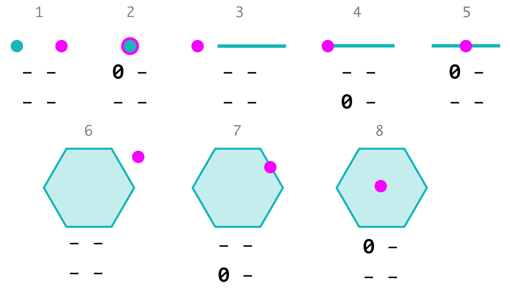
DE-4/9IM (09-17) полигоны
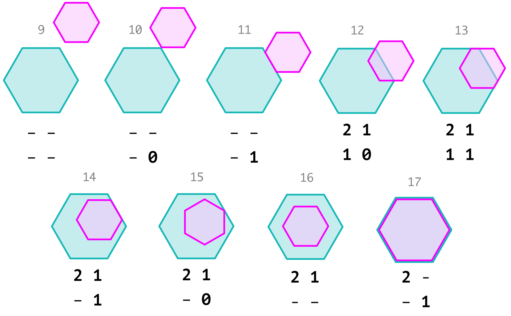
DE-4/9IM (18-25) линии/полигоны
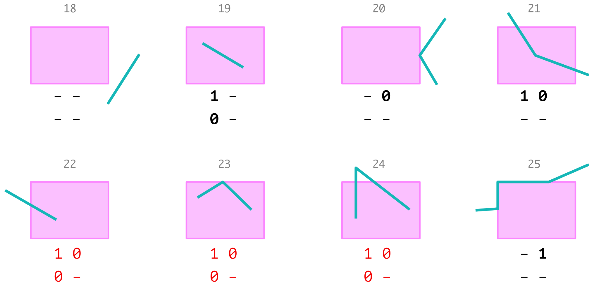
DE-4/9IM (26-33) линии/полигоны
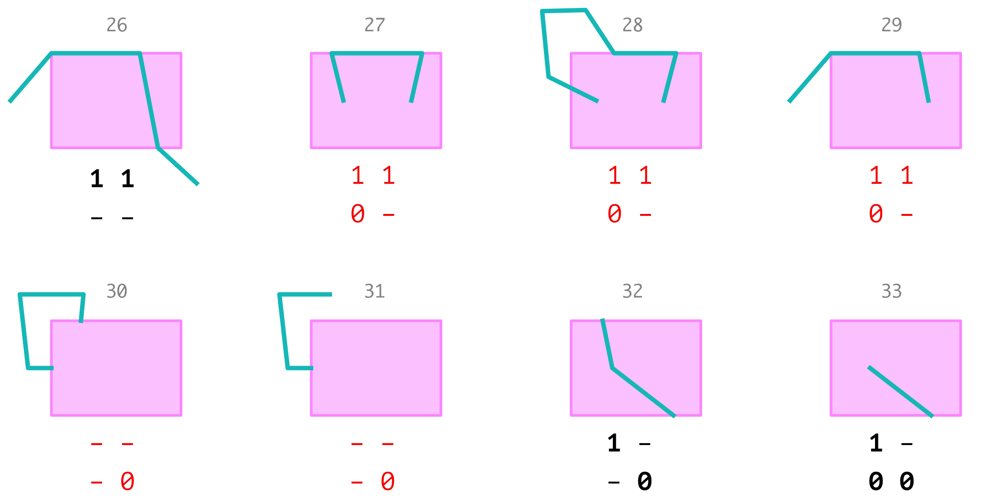
DE-4/9IM (34-43) линии/полигоны
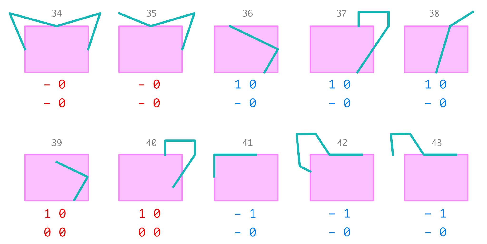
DE-4/9IM (44-48) линии/полигоны
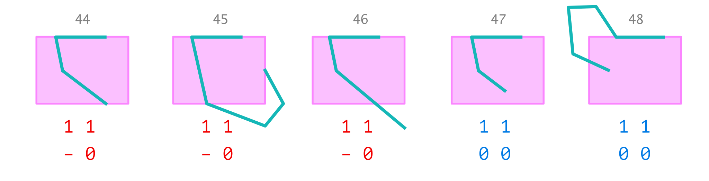
DE-4/9IM (49-58) линии
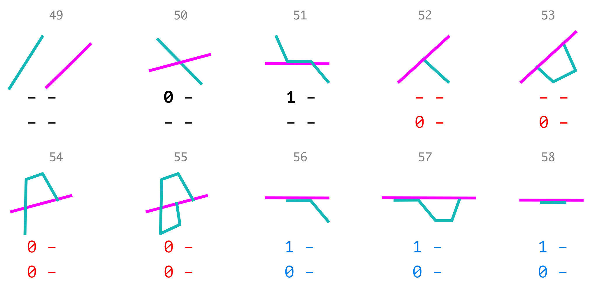
DE-4/9IM (59-69) линии
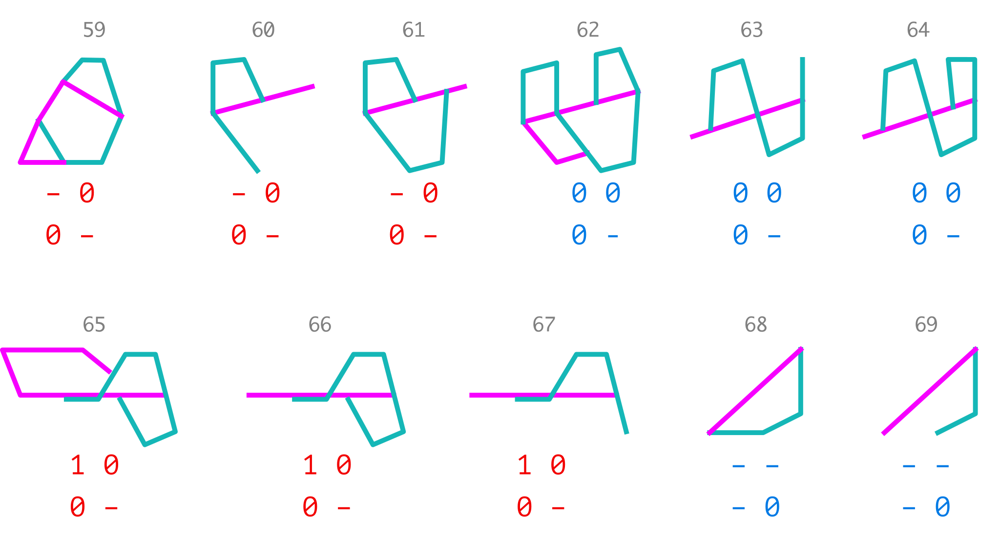
DE-4/9IM (70-78) линии
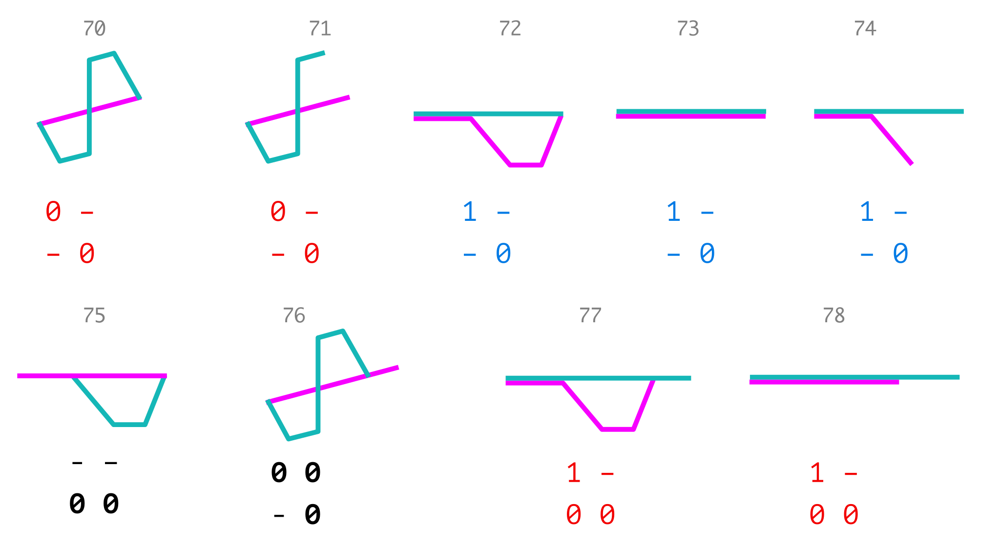
DE-4/9IM (79-81) линии
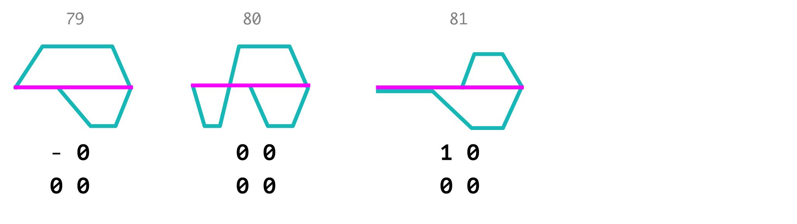
Calculus-based model (CBM)
Базируется на 5 отношениях и операторах границы для полигона (\(A\)) и линии (\(L\)).
| \(\langle\lambda_1, touch, \lambda_2\rangle\) | \((\lambda_1^\circ \cap \lambda_2^\circ = \varnothing) \land (\lambda_1 \cap \lambda_2 \neq \varnothing)\) |
| \(\langle\lambda_1, in, \lambda_2\rangle\) | \((\lambda_1^\circ \cap \lambda_2^\circ \neq \varnothing) \land (\lambda_1 \cap \lambda_2 = \lambda_1)\) |
| \(\langle\lambda_1, cross, \lambda_2\rangle\) | \(\Big(\dim(\lambda_1^\circ \cap \lambda_2^\circ) = \max\big(\dim(\lambda_1^\circ), \dim(\lambda_2^\circ)\big) - 1\Big)\\\land (\lambda_1 \cap \lambda_2 \neq \lambda_1) \land (\lambda_1 \cap \lambda_2 \neq \lambda_2)\) |
| \(\langle\lambda_1, overlap, \lambda_2\rangle\) | \(\big(\dim(\lambda_1^\circ) = \dim(\lambda_2^\circ) = \dim(\lambda_1^\circ \cap \lambda_2^\circ)\big)\\\land (\lambda_1 \cap \lambda_2 \neq \lambda_1) \land (\lambda_1 \cap \lambda_2 \neq \lambda_2)\) |
| \(\langle\lambda_1, disjoint, \lambda_2\rangle\) | \(\lambda_1 \cap \lambda_2 = \varnothing\) |
| \((A, b)\) | \(\partial A\) |
| \((L, f), (L, t)\) | \(\partial L = \{f, t\}\) |
| \(\lambda\) | \(A~|~L~|~P~|~(A,b)~|~(L,f)~|~(L,t)\) |
CBM и DE-9IM (touch, in)
Можно доказать эквивалентность моделей CBM и DE-9IM, расписав каждое отношение в прямую и обратную сторону.
\[ \color{red}{\langle\lambda_1, touch, \lambda_2\rangle} \Leftrightarrow \Big(\dim(\lambda_1^\circ \cap \lambda_2^\circ) = -\Big) \\ \land \Big(\big(\dim(\partial \lambda_1 \cap \lambda_2^\circ) \neq -\big) \lor \big(\dim(\lambda_1^\circ \cap \partial \lambda_2) \neq - \big) \lor \big(\dim(\partial \lambda_1 \cap \partial \lambda_2) \neq -\big)\Big) \]
\[ \color{red}{\langle\lambda_1, in, \lambda_2\rangle} \Leftrightarrow \big(\dim(\lambda_1^\circ \cap \lambda_2^\circ) \neq -\big) \\ \land \big(\dim(\lambda_1^\circ \cap \lambda_2^-) = -\big) \land \big(\dim(\partial \lambda_1 \cap \lambda_2^-) = - \big) \]
Для определения отношений touch и in не требуется уточнять топологическую размерность геометрии
CBM и DE-9IM (cross, overlap)
\[ \color{red}{\langle L, cross, A\rangle} \Leftrightarrow \big(\dim(L^\circ \cap A^\circ) \neq -\big) \land \big(\dim(L^\circ \cap A^-) \neq -\big) \]
\[ \color{red}{\langle L_1, cross, L_2\rangle} \Leftrightarrow \dim(L_1^\circ \cap L_2^\circ) = 0 \]
\[ \color{red}{\langle A_1, overlap, A_2\rangle} \Leftrightarrow \big(\dim(A_1^\circ \cap A_2^\circ) \neq -\big) \\ \land \big(\dim(A_1^\circ \cap A_2^-) \neq -\big) \land \big(\dim(A_1^- \cap A_2^\circ) \neq - \big) \]
\[ \color{red}{\langle L_1, overlap, L_2\rangle} \Leftrightarrow \big(\dim(L_1^\circ \cap L_2^\circ) = 1 \big) \\ \land \big(\dim(L_1^\circ \cap L_2^-) \neq -\big) \land \big(\dim(L_1^- \cap L_2^\circ) \neq - \big) \]
Отношение cross определено только для линий. Отношение overlap определено для геометрий одинаковой топологической размерности (но не точек).
CBM и DE-9IM (disjoint, equals)
\[ \color{red}{\langle\lambda_1, disjoint, \lambda_2\rangle} \Leftrightarrow \big(\dim(\lambda_1^\circ \cap \lambda_2^\circ) = -\big) \\ \land \big(\dim(\partial \lambda_1 \cap \lambda_2^\circ) = -\big) \land \big(\dim(\lambda_1^\circ \cap \partial \lambda_2) = - \big) \land \big(\dim(\partial \lambda_1 \cap \partial \lambda_2) = -\big) \]
Отношение equals в модели CBM не определено, но его можно развернуть следующим образом:
\[ \color{green}{\langle \lambda_1, equals, \lambda_2\rangle} \Leftrightarrow \big(\dim(\lambda_1^\circ \cap \lambda_2^\circ) \neq - \big) \\ \land \big(\dim(\lambda_1^\circ \cap \lambda_2^-) = - \big) \land \big(\dim(\partial \lambda_1 \cap \lambda_2^-) = - \big) \\ \land \big(\dim(\lambda_1^- \cap \lambda_2^\circ) = - \big) \land \big(\dim(\lambda_1^- \cap \partial \lambda_2) = - \big) \]
CBM и DE-9IM (частные случаи)
Граница полигона внутри другого объекта (без уточнения размерности)
\[ \color{blue}{\langle (A, b), in, \lambda\rangle} \Leftrightarrow \big( \dim(\partial A \cap \lambda^\circ) \neq - \big) \land \big(\dim(\partial A \cap \lambda^-) = - \big) \\ \Leftrightarrow \Big(\dim\big((\partial A)^\circ \cap \lambda^\circ \big) \neq - \Big) \land \Big(\dim\big((\partial A)^\circ \cap \lambda^- \big) = - \Big) \land \Big(\dim\big(\partial(\partial A) \cap \lambda^- \big) = - \Big) \]
Одна граничная точка линии касается полигона, а вторая нет
\[ \color{blue}{\langle (L, f), touch, A \rangle \land \langle (L, t), disjoint, A \rangle} \\ \Leftrightarrow \big( \dim(\partial L \cap \partial A) = 0 \big) \land \big( \dim (\partial L \cap A^-) = 0 \big) \]
Аналогичным образом можно определить эквивалентность моделей для каждого из 81 случая модели DE-8IM, а также их генерализаций DE-4IM.
ISO/IEC 13249:2016 SQL/MM Part 3: Spatial
В стандарте определены SQL-функции для работы с пространственными данными:
| Функция | CBM / DE-9IM | Simple Features | SQL/MM | PostGIS |
|---|---|---|---|---|
ST_Equals |
\(\color{green}{\langle\lambda_1, equals, \lambda_2\rangle}\) | a.Equals(b) |
✓ | ✓ |
ST_Disjoint |
\(\langle\lambda_1, disjoint, \lambda_2\rangle\) | a.Disjoint(b) |
✓ | ✓ |
ST_Intersects |
\(\lnot\langle\lambda_1, disjoint, \lambda_2\rangle\) | a.Intersects(b) |
✓ | ✓ |
ST_Touches |
\(\langle\lambda_1, touch, \lambda_2\rangle\) | a.Touches(b) |
✓ | ✓ |
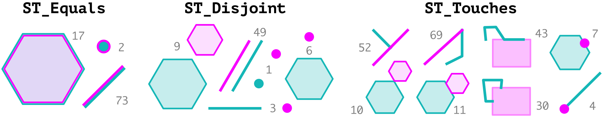
ISO/IEC 13249:2016 SQL/MM Part 3: Spatial
В стандарте определены SQL-функции для работы с пространственными данными:
| Функция | CBM / DE-9IM | Simple Features | SQL/MM | PostGIS |
|---|---|---|---|---|
ST_Crosses |
\(\langle\lambda_1, cross, \lambda_2\rangle\) | a.Crosses(b) |
✓ | ✓ |
ST_Within |
\(\langle \color{red}{\lambda_1}, in, \color{blue}{\lambda_2}\rangle\) | a.Within(b) |
✓ | ✓ |
ST_Contains |
\(\langle \color{blue}{\lambda_2}, in, \color{red}{\lambda_1}\rangle\) | a.Contains(b) |
✓ | ✓ |
ST_Overlaps |
\(\langle\lambda_1, overlap, \lambda_2\rangle\) | a.Overlaps(b) |
✓ | ✓ |
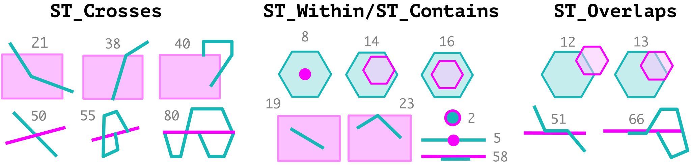
Дополнительные функции PostGIS
Дополнительно к ST_Contains в PostGIS определены функции:
| Функция | CBM / DE-9IM | PostGIS |
|---|---|---|
ST_CoveredBy |
\(\langle \color{red}{\lambda_1}, in, \color{blue}{\lambda_2}\rangle \lor \langle \color{red}{\lambda_1}, in, \color{blue}{(\lambda_2,b)}\rangle\) | ✓ |
ST_Covers |
\(\langle \color{blue}{\lambda_2}, in, \color{red}{\lambda_1}\rangle \lor \langle \color{blue}{\lambda_2}, in, \color{red}{(\lambda_1,b)}\rangle\) | ✓ |
ST_ContainsProperly |
\(\langle \color{blue}{\lambda_2}, in, \color{red}{\lambda_1}\rangle \land \langle \color{blue}{\lambda_2}, disjoint, \color{red}{(\lambda_1,b)}\rangle\) | ✓ |
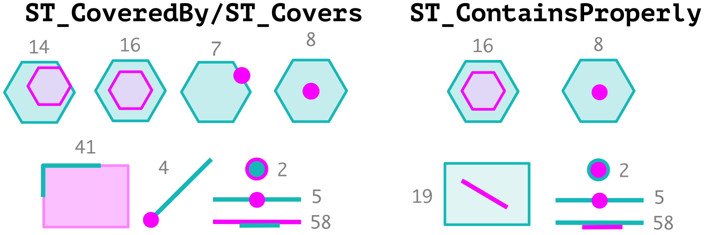
Contains, ContainsProperly, Covers
Данные топологические отношения различаются следующим образом:
| Функция | Множества | Пояснение |
|---|---|---|
ST_Contains |
\(\lambda_2^\circ \subset \lambda_1^\circ\) | внутренность второго объекта располагается во внутренности первого |
ST_ContainsProperly |
\(\lambda_2 \subset \lambda_1^\circ\) | второй объект располагается во внутренности первого |
ST_Covers |
\(\lambda_2 \subset \lambda_1\) | второй объект располагается в первом |
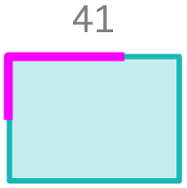
Чтобы найти линию, целиком совпадающую с границей полигона, нужно использовать сочетание ST_Covers и ST_Touches. Такая линия не располагается внутри полигона (ST_Contains и ST_ContainsProperly дадут ложь), но при этом покрывается им (ST_Covers даст истину) и касается его (ST_Touches так же даст истину).
Свойства бинарных отношений
Введенные отношения обладают следующими свойствами:
| Отношение | Рефлексивность | Симметричность | Транзитивность |
Equals |
✓ | ✓ | ✓ |
Disjoint |
✓ | ||
Intersects |
✓ | ✓ | |
Touches |
✓ | ||
Crosses |
✓ | ||
Within / Contains |
✓ | ✓ | |
Overlaps |
✓ | ||
CoveredBy / Covers |
✓ | ✓ | |
ContainsProperly |
✓ |
Равенство геометрий
Пространственное равенство означает, что геометрии совпадают на уровне множеств координат:
SELECT ST_Equals(
ST_GeomFromText('GEOMETRYCOLLECTION (POINT (1 2), POINT (2 3))'),
ST_GeomFromText('MULTIPOINT ((1 2), (2 3))')
) -- trueГеометрическое равенство означает, что геометрии совпадают с точностью до внутреннего представления.
SELECT ST_OrderingEquals(
ST_GeomFromText('GEOMETRYCOLLECTION (POINT (1 2), POINT (2 3))'),
ST_GeomFromText('MULTIPOINT ((1 2), (2 3))')
) -- falseST_OrderingEquals — дополнительная функция PostGIS, которая позволяет установить факт геометрического равенства. Если не учитывать информацию о СК, ее вызов соответствует выражению ST_AsBinary(A) = ST_AsBinary(B)
ST_Relate: отношения общего вида
Стандарт SQL/MM также предписывает необходимость наличия функции ST_Relate, которую можно использовать для:
проверки отношения на предмет соответствия заданному шаблону DE-9IM;
вычисления фактической матрицы DE-9IM для заданных объектов.
| SQL/MM | DE-9IM | Расшифровка |
|---|---|---|
T |
\(\dim(S) \neq -\) | Пересечение существует |
F |
\(\dim(S) = -\) | Пересечение не существует |
* |
Наличие пересечения не имеет значения | |
0 |
\(\dim(S) = 0\) | Пересечение существует и его размерность равна \(0\) |
1 |
\(\dim(S) = 1\) | Пересечение существует и его размерность равна \(1\) |
2 |
\(\dim(S) = 2\) | Пересечение существует и его размерность равна \(2\) |
Шаблоны матриц
Матрицы представляются в виде 9-символьных слов:
ST_Equals |
T*F**FFF* |
|||
ST_Disjoint |
FF*FF**** |
|||
ST_Intersects |
T******** |
*T******* |
***T***** |
****T**** |
ST_Touches |
FT******* |
F**T***** |
F***T**** |
|
ST_Crosses |
T*T****** |
T*****T** |
0******** |
(0 - линии) |
ST_Within |
T*F**F*** |
|||
ST_Contains |
T*****FF* |
|||
ST_Overlaps |
T*T***T** |
1*T***T** |
(1 - линии) |
|
ST_CoveredBy |
T*F**F*** |
*TF**F*** |
**FT*F*** |
**F*TF*** |
ST_Covers |
T*****FF* |
*T****FF* |
***T**FF* |
****T*FF* |
ST_ContainsProperly |
T***F*FF* |
Пространственный запрос
Пространственный запрос
SELECT tab1.* FROM tab1, tab2
WHERE st_<relation>(tab1.geom, tab2.geom)Пространственный запрос с условием:
SELECT tab1.* FROM tab1, tab2
WHERE st_<relation>(tab1.geom, tab2.geom)
AND st_<function>(tab1.geom) AND/OR <condition>Для \(3\) и более слоев
SELECT DISTINCT tab1.* FROM tab1, tab2, tab3
WHERE st_<relation>(tab1.geom, tab2.geom) AND/OR st_<relation>(tab1.geom, tab3.geom)Часто используемые функции для геометрических условий: st_area, st_length
Представления
Представление — вирутуальная таблица, которая является результатом выполнения запроса
CREATE OR REPLACE VIEW geo_forest_parcels AS
SELECT DISTINCT geo_points.*
FROM base.geo_points, base.forest, base.land_parcels
WHERE st_within(geo_points.geom, forest.geom)
AND st_overlaps(forest.geom, land_parcels.geom)
AND st_area(land_parcels.geom) > 10000Для того чтобы связать слой с сам самим, необходимо использовать псевдонимы:
SELECT DISTINCT t1.*
FROM tab t1, tab t2
WHERE st_<relation>(t1.geom, t2.geom)